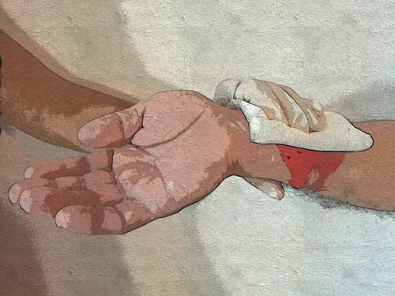
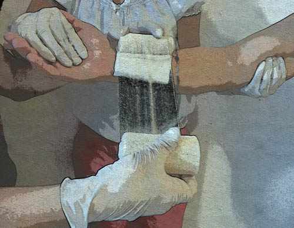
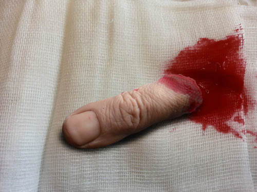
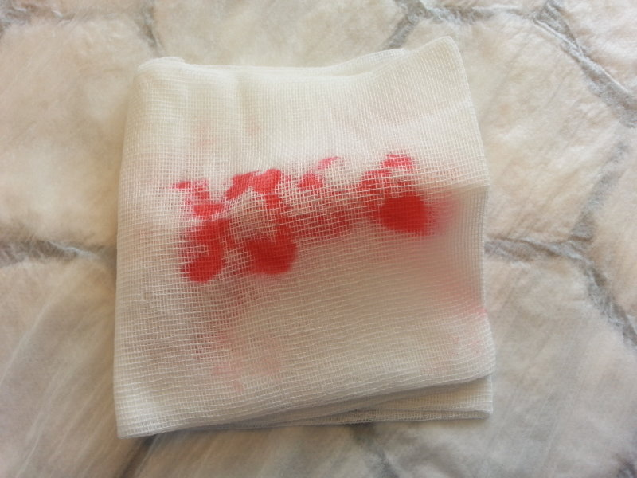
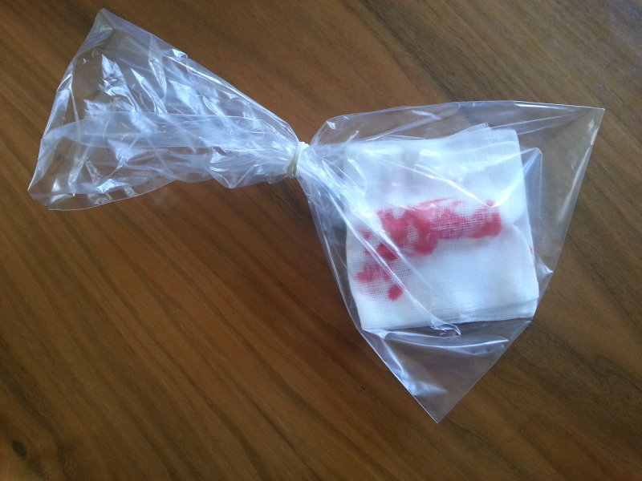
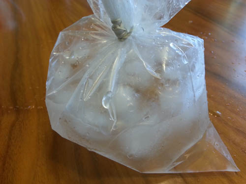
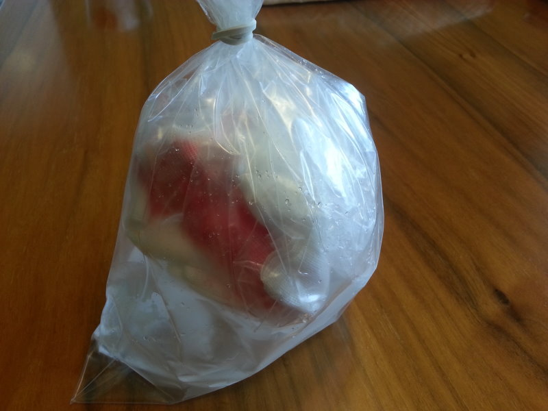

Hude krvavitve spadajo med tista stanja, kjer je nujna takojšna pomoč poškodovancu. Zelo hitro lahko izgubimo veliko krvi, zaradi česar je nujno, da poznamo načine zaustavljanja hudih krvavitev. S tem lahko poškodovancu rešimo življenje še pred prihodom ekipe nujne medicinske pomoči. Poleg izkrvavitve poškodovanca so ogrožajoče še okužbe, ki se lahko kasneje razvijejo.
KRVAVITVE GLEDE NA LOKACIJO
Zunanje krvavitve: kri odteka iz telesa ali iz telesnih odprtin navzven, takoj lahko ukrepamo.
Notranje krvavitve: so krvavitve v telesne votline, telesna tkiva in organe. Notranje krvavitve zelo težko prepoznamo, po navadi šele takrat, ko je prizadeti izgubil že veliko krvi in se pojavijo znaki šoka.
KRVAVITVE GLEDE NA IZVOR
Arterijske krvavitve: svetlo rdeča kri izteka iz arterije v močnem curku, sunkovito in običajno v ritmu utripanja srca.
Venske krvavitve: temno rdeča kri izteka počasneje in enakomerno.
Kapilarne krvavitve: zanje je značilno mezenje krvi iz rane, zato je izguba krvi majhna.
Znamenja velike izgube krvi so:
1. MOČNA BLEDICA kože in vidnih sluznic, predvsem na ušesih, ustnicah...
2. HLADNA in LEPLJIVA KOŽA
3. POSPEŠENO DIHANJE v obliki lovljenja sape in zehanja
4. POSPEŠEN in SLABOTEN PULZ (več kot 120-krat v minuti)
5. NEMIR
6. ZOŽITEV ZAVESTI, pri kateri se poškodovanec počasi in nepopolno odziva na okolje
7. SLABOST, UTRUJENOST in ŽEJA
8. MEGLA in TEMA PRED OČMI, ŠUMENJE in ZVONJENJE V UŠESIH
9. OMEDLEVICA in STRAH
PRVA POMOČ PRI KRVAVITVAH
- krvavitev moramo čim prej ustaviti
- NOTRANJIH KRVAVITEV ne moremo zaustaviti s sredstvi PP, zato je potreben hiter in obziren prevoz v bolnišnico
- zasilno ustavljanje krvavitev je temeljni ukrep PP za reševanje življenja
NAČINI ZAUSTAVLJANJA KRVAVITVE
Pritisk s prsti na krvavečo rano
Najprej si nadenemo rokavice za enkratno uporabo. Na krvavečo rano pritisnemo s sterilnim povojem, gazo, čisto krpo, celo s kosom oblačila ali pa kar s prsti. Tak neposredni pritisk na rano je najučinkovitejši način začasnega ustavljanja krvavitve, razen pri poškodbi očesa.

Slika 5. Pritisk s prsti na krvaveče mesto
Digitalni pritisk področne arterije ob kost
Vedeti moramo, kje potekajo glavne arterije in kje jih lahko pritisnemo ob kost. Krvavečo arterijo pritisnemo ob kost med mestom krvavitve in srcem.
Kompresijska obveza
S kompresijsko obvezo, ki pritiska tesno na rano in mesto krvavitve, lahko zaustavimo večino krvavitev na glavi, trupu in udih.
NAMEŠČANJE KOMPRESIJSKE OBVEZE
1. Najprej stisnemo na primer nadlahtno arterijo ob nadlahet in dvignemo ud. Sterilno pokrijemo rano z gazo ali blazinico prvega povoja.
2. Čez sterilno gazo na rano položimo pritisno blazinico (nerazvit povoj, deščico, kamen, stiropor ipd.).
3. Blazinico nato pritrdimo s čvrstimi krožnimi zavoji.
4. Opazovati moramo barvo kože in utrip arterije na udu.
5. Ud imobiliziramo in ga dvignemo.
Ko namestimo kompresijsko obvezo, po nekaj minutah prenehamo pritiskati na žilo. Če po petih minutah obveza ne prekrvavi, je bila krvavitev uspešno ustavljena, drugače moramo obvezo ponovno namestiti v celoti. Pri hudih krvavitvah pregledamo obvezo vsakih pet do deset minut.
Pravilno nameščena kompresijska obveza mora pritiskati na rano in krvaveče žile, vendar ne sme zadrgniti uda.

Slika 6: Nameščanje kompresijske obveze
Najpogostejši materiali, ki jih uporabljamo pri oskrbi ran:
- sterilne komprese, sterilni prvi povoj (klasični prvi povoj vsebuje dvoje: sterilno blazinico in povoj, s katerim blazinico povijemo), rokavice za enkratno uporabo, trikotne rute, obliže...
Osnovna načela pri oskrbi ran:
- ran se ne smemo dotikati z rokami, saj jih lahko s tem dodatno okužimo
- uporabljamo rokavice za enkratno uporabo zaradi lastne zaščite in zaščite oskrbovanca pred okužbo
- v rano ne dihamo
- ne uporabljamo nobenih mazil, praškov in neznanih pripravkov iz domače lekarne
- tujke v ranah pustimo pri miru
OSKRBA POVRŠINSKE RANE (in ugriznine kot izjeme med globokimi ranami)
Lahko izpiramo s hladno tekočo ali prekuhano vodo oziroma vodo iz plastenke in jih zaščitimo s sterilno gazo ali obližem.
Pri vseh GLOBOKIH RANAH ukrepamo po naslednjem vrstnem redu:
1. Natančen pregled rane: odstranimo oblačila, obleko razparamo po šivih. PAZIMO, DA SE PRI TEM RANE NE DOTIKAMO.
2. Ustavimo krvavitev: najuspešnejša je kompresijska obveza. Pri hudih krvavitvah najprej ustavimo to z neposrednim pritiskom sterilne gaze na rano ali pa s pritiskom področne arterije ob kost.
3. Rano sterilno povijemo in poškodovani ud imobiliziramo: Rano pokrijemo s sterilno gazo, obvežemo jo s trikotno ruto ali povojem. Za obvezo lahko uporabimo tudi čist, prelikan robec. Ranjeni del telesa ali uda mora mirovati. Imobilizacija ublaži bolečine, preprečuje povečanje krvavitve ali novo krvavitev ter širjenje morebitne okužbe.
4. Če je rana obsežna in globoka, naj poškodovanec LEŽI. Pokličemo pomoč na številko 112.
5. S poškodovancem se pogovarjamo, ga spodbujamo in poskrbimo za ustrezen prevoz v bolnišnico. Kadar je rana zelo obsežna, je za obvezo najprimernejša sterilna gaza z več plastmi. Obvezo naredimo tako, da rano pokrijemo s sterilno gazo in jo povijemo s povojem.
RANE, KI ZAHTEVAJO POSEBNO OSKRBO
Oskrba rane, v kateri je tujek
Tujkov v ranah ne odstranjujemo, ker bi lahko s tem povzročili večjo krvavitev (tujek rano maši). Rano sterilno pokrijemo, poškodovani ud mobiliziramo.
Oskrba amputiranega uda
  
Slike 7, 8 in 9: Amputirani del zavijemo v sterilno gazo in ga namestimo v PVC-vrečko, ki jo nepredušno zavežemo.

Sliki 10 in 11: V drugo vrečko natresemo koščke ledu in vanjo vlijemo vodo, da dosežemo temperaturo okoli +4 stopinje celzija.

Slika 12: Obe vrečki damo v tretjo, opremimo jo s podatki o poškodovancu in poškodbi ter času nastanka poškodbe.
Amputiranega dela NIKOLI NE DAMO NA LED (zamrznjeno meso, zamrzovalne vložke ipd.), ker bo za kirurško oskrbo neuporaben.
Katera je najpogostejša metoda zaustavljanja HUDE krvavitve?
Katera so osnovna načela oskrbe ran?